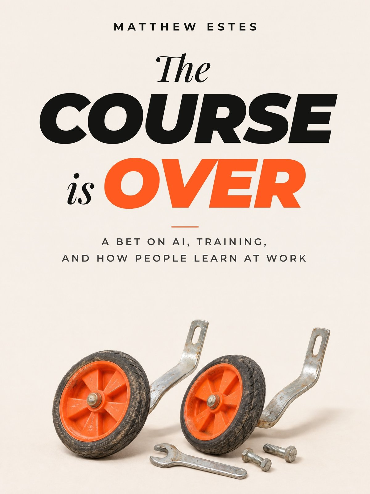

The real task
No module before the work. People start on the job itself: the expense report, the HR transaction, the hard conversation.
Matthew Estes · Spring 2027
A bet on AI, training, and how people learn at work.
For everyday corporate learning, the course is no longer needed to build capability. The learning still is. The teaching moves into the work.
From an L&D builder with 20+ years in health care, consulting and higher ed.

The bet
Books like this usually arrive with the answer. This one arrives with the bet.
No module before the work. People start on the job itself: the expense report, the HR transaction, the hard conversation.
The company's own policies and procedures appear at the moment of use, so nobody has to remember a slide from three weeks ago.
An AI coach that teaches as you go, asks you to say back what you did, and pulls back as you show you've got it.
Training wheels
Both sides of the evidence
The difference is whether the help teaches or only answers. This book is about building the kind that teaches and then gets out of the way.
How we'll know
The book borrows a tool from marketing, the A/B test, and names the result that would prove it wrong.
Everyone does the work with the AI switched off. A month later they do it again, still off.
the people who took no course can't do the job without the AI, or can do it on day one but not a month later.
Appendix A, The Kit, includes a two-group version any learning team can run.
Inside the book
Follow four working adults, Dana, Marcus, Priya and Theo, through the training they get today and the help they could get instead.
The Kit: run the test yourself · Plain Words: a glossary without jargon · Questions for Your Team: twelve prompts for your next planning meeting
Who it's for
Instructional designers, L&D managers and directors who build the courses this book questions, and who want to know what to build next.
CLOs, HR and talent leaders who sign off on training spend and want to see people do the work differently, not just finish a module.
Enablement, operations and support leaders already rolling out AI assistants who want people to learn from them, not only lean on them.
Pre-order
Pre-orders ship on release day, Spring 2027. Pre-order now and get the introduction free today.
For teams
Team packs come with a chapter-by-chapter discussion guide built from Questions for Your Team. Need 50+ copies, a keynote or a workshop? Get in touch.
Secure checkout by Shopify. Prices in USD.
Free while you wait
Plus short "Bet Notes" emails on what the research says, what learning teams are testing, and when the book ships. No spam. Unsubscribe anytime.
Fair questions
No. It says the job changes drastically: less content, more practice, people ready sooner, and a classroom that goes back to something more human than a slide deck.
No. It's written by a learning professional, not a researcher. Every study is cited, with a note on how far along its validation is and whether it was run on students or on working adults.
No. Appendix B, Plain Words, explains every term, and the ideas work whatever tools your company uses.
Release is planned for Spring 2027. Pre-orders are charged and shipped by Shopify's checkout terms, and you'll get an email when your copy ships.